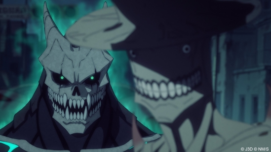

Műfajok:
Akció, Sci-Fi, Shounen
Leírás:
Egy világban, ahol a kaijuu-támadások mindennaposak, csak a Védelmi Erők képesek felvenni velük a harcot. Hibino Kafka, harmincas éveiben járó, kiégett férfi, a szörnyek tetemeinek takarításával tölti napjait, miközben arról álmodik, hogy egyszer ő is harcolhat. Amikor a fiatal Reno csatlakozik hozzájuk, Kafka önfeláldozása menti meg őket egy újabb támadás során. Ám a kórházban egy különös látogató mindent megváltoztat, és kezdetét veszi Kafka igazi története…